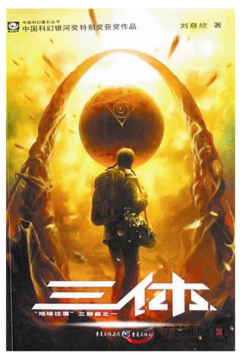
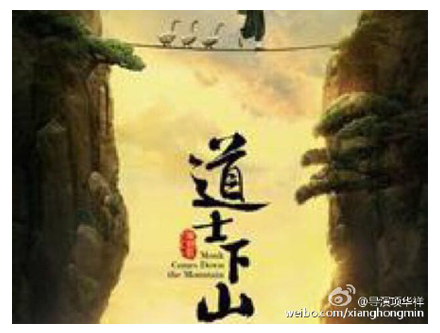
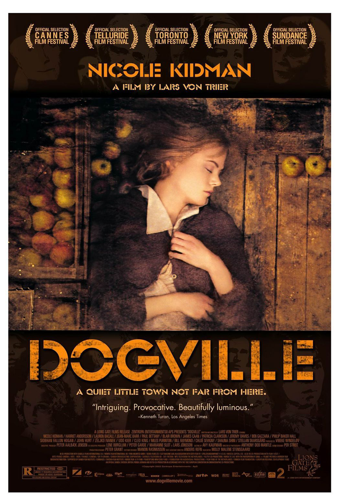

漫漫想，慢慢写
分类：个人日记 发布日期：2015-08-21 22:02
暑
期的日志有些拖延，因为我并没有去旅游，一向习惯于在游玩中写点东西的我有些许的不适。加之考研和驾校的缘故，日常难免单调。庆幸之，单调却略显缓慢的节奏，也使平常有了更多的思考时间，去观察，去体悟。比如练车时，会想车轮为什么是圆的，方向盘为什么是圆的，人体的很多器官、骨节，植物的根茎、花果，以及太阳、月亮？是顺应历史的规律（区别于履带车轮），顺应自然的规律（地势），顺应契合的选择，顺应互相影响（同化，细胞、动植物趋向于地球、宇宙），顺应磨损的规律（转动周期），顺应存在的规律，顺应生存的法则？那么月亮，太阳，石头，阳光，电子有生命吗？我们为什么感受不到他们的生命？他们在不同维度吗？冥冥之中，似乎没什么不对。哈，好吧，我承认我是瞎扯的，练车的时候也不会想这种问题，这些都是我现在瞎想的。虽然是这样胡乱提出一个貌似不会有问题的问题，但我还是去想答案了。
如 果放在以前，我一定会先吐槽一句“无聊”或“有点意思”或故作沉思跑开，如果实在要回答，［装逼模式开启］我会从物理运动规律上向他解释圆在线面上滚动的化曲为直的原理，力臂动力和压力产生的摩擦阻力之间的关系用圆轮和方向盘要少做多少无用功；流体压力的作用导致动物这种由动物细胞这种软体结构的单 位组成 的整体偏软的稳定形态（这个计算起来有点复杂，跟他说：反正说了你也不懂。就行了），虽然植物
很硬，但也可以解释圆柱型材料同其他形状相比的强大韧性和柱形管道最大传输效率以及星形放射状对于空间、物质等资源的最大共享化的巨大作用（根茎花）；万有引力产生的向心力不做功应合能量守恒而达到的一种稳定状态（天体运动），太空中的反物质和圆周运动的自转物体的磨损作用化为球体的必然趋势。［装逼模式关闭］休息一下。。。
当 然，我并没有明显的意图讽刺和否定科学，［脑洞开启］“科学”是这个时代的人们用来认识世界的代名词，正如古人用阴阳五行来解释万物而无往不利，但是也有不阴不阳的东西使“阴阳”无法解释，比如辐射、磁场、细菌（当然不能用科学先给他们归类，再分阴阳，这是作弊；就比如将射线、紫外线、红外线这些归类为光而从“阳”解释），单纯的阴阳仅限于可感知的描述（古人仅以五感感知），否则就沦为“怪力乱神”。同理佛家的“因果”论不能解释大数据一样，因为它的出现本身就斩断了这一看似无懈可击的联系（不溯因也得果），这就好比母鸡不管是否啪啪啪都能产鸡蛋一样，“因果”只是人们描述这一现象而造的词罢了。但是，不管怎么说这些保留下来的理论都有惊人的太极性（对立统一）。就比如，物理中，能量和动量贯穿整个物理世界，标量和矢量描述外在表现的无序和有序，以及确定性关系和不确定性关系（当初接触光的衍射我就纳闷，为何不能确定每一个光子的位置，是不是光子有不同的种类，其内因不同导致了位置不同，然而光子这个至微的“能量”个体如何观察其内部结构）。这就好比地震只有发生了之后才可以确定其位置，然而地震真的不可预测吗？从动物的各种表现来看，貌似并非如此，只是我们没有掌握罢了。还有生物学，动植物的动静描述、与微生物的宏观微观描述；与生物学相对应的应该还有“死物”学吧，是什么呢，化学？ ［脑洞关闭］想多了对身体不好，休息一下。。。
学 习之余打发时间的方式除了看小说、玩游戏，就只有看视频了（其它小概率事件忽略）。暑期电影，比如《煎饼侠》、《道士下山》等，对于我们而言，放映的当天就能了解到。《煎饼侠》由大鹏这个名牌主持来导演和主演的电影，以及其它各种大牌影星、歌星、相声星。《道士下山》也一样，说相声的、做模特的、戒过毒的、当过兵的都在里面。每个时代都是如此，越俎代庖并不都是千夫所指的，只要他们能带来快乐，拯救不开心。就正如你所看到的，做主持人的说过相声，说相声的去演电影，演电影的去录综艺，搞综艺的去唱歌，唱歌的来玩LOL等，都是大家喜闻乐见的。《煎饼侠》就是这种用综艺形式来拍演演戏的过程，让我们发现演戏的过程中也是这么好玩，这就是为什么有些作品的花絮如此欢乐的原因吧。整部电影都是讲几个人为追求各自梦想一起拍一部电影的故事，为了迎合国民的习惯，加入了一些屌丝元素，成了电影中最大的看点，当然还有一堆堆的大腕。恰如《屌丝男士》里面，堆大腕，演屌丝，而成为我们都乐见的短剧，因为大腕并不是高冷异常，他们也平易近人，毕竟都是人。这也就能解释，近年来像跑男、挑战极限、爸爸去哪儿等这些综艺节目的高热不止了。《道士下山》和我曾经看过的一本网络小说（很久以前看的，忘记了名字，不过剧情极似）类似，只是主角没有宝强的何安下这么呆萌。我想说的是郭富城在剧中扮演周西宇的一段独白：“ 这个世界很奇怪，动物不如植物。一切植物都在暗中模仿太阳，树的年轮，描画的便是太阳的形状，一朵花开放，是太阳的动态。而一切动物，则在模仿月亮。夜晚的动物远超过白日，月圆时，所有动物都会变得亢奋，包括土里的虫子、深海的鱼。 ”，这是古人观察这个世界而得到的想法吗？太阳提供能量，发光发热，月亮不能发光发热，只能消耗和传播能量。亦如植物生产，动物消费和传播，而动物植物的遗体又终归尘土，化为石油，化为煤土，化为沼气，是为能量。很多人无法定位这部电影的类型，武侠、奇幻、伦理、纪录？只不过是何安下这个名不见经传的小人物观察这个世界的一个剪影罢了，他带着好奇和惊奇步入这个区别于“自然社会”的斑斓多彩的“人类社会”，他单纯却不失机警，他无知却不尽愚昧，他悟性不高却不弃思索，他不是在看而是在观察。当然，我不是在说这部电影是个极好的电影，至少它是另一种思路，虽不知道这种思路在党国的监督下能走多远。当然，如果在口头上和大家讨论这部电影，一般会谈及其中的夸张特效，日月基情和宝宝的二缺样，谈那些不被抽才怪。
电 影里如果讨论哲学问题，难免会牵扯到敏感性话题，因为国民一直以来是受古典正义熏陶的，出师有名（国）、替天行道（宗教）、为民除害（个人）。正如法律旨意在公平，却时常被正义化，偏向于情理；抑或专制化，偏向于金钱和权利。或许，公平在善恶中应当不该有归类的偏袒，极善是不公平，极恶亦不公平。西方天主教（基督教分教）的教皇代上帝审判众生，而教义上又主张极限的宽容。然而人不是上帝，上帝不会被迫害，可以毫无情感，人却有情感，含带自己的善恶观。一个没有善恶观的人，在人群中会是怎样的存在，渺小个体又怎么体现自己的存在感。嗯，忽然想起了8月初看的两部电影《圣殇》和《苔藓》，今天才知道《圣殇》这部电影获得过威尼斯电影节金狮奖，我也不过分的做评价了，相信有兴趣的会去了解，没兴趣的看了对身体不好，因为其中仇恨与宽容矛盾，堕落与救赎的对比在某种程度上是违反人性的（PS张全蛋：什么鬼，韩国棒子）。《苔藓》借用豆瓣的影评< 像苔藓一样生存>，其中描述了一个循环的状态，我想如果如此的话，也只能存在于人类社会，这也是人和其他社会群体之间的差别，也正是因为这一思想没有普适性，我才怀疑他的现实意义，总感觉不应如此（比如父母养育），庆幸后来的几部电影确实让我想通了其中关节。
国 外的电影总是表现的极端露骨和大胆，总能表达自己所想，而我们的电影要考虑的太多，正在高速发展的天朝国民似乎比较暴躁，导演为了顾及票房和自己的面子，总是不能很好的表达剧本的意思，高调而又含蓄。正如早期张艺谋所说：“我说心里话，我拍《英雄》《埋伏》，不是搞艺术研发。我就是想用这种武侠或者动作类型电影，去拍能营造票房效果的电影，吸引更多的观众。”貌似并没什么不对，我们要定位自己的位置，永远不要强加给别人另一种目标和人生观，有谁敢说别人活的没自己有意义呢？。
昨 天是七夕，各个网站被“单身狗”这条字眼所充斥。于是就出现了如下的对话：
我：“满屏幕都是 单身狗。”
朱老板：“你他妈的不也是 单身狗。”
我：“单身狗是一个种族？它的存在有错？再说这只是一个阶段而已，结婚了岂不是要步入坟墓。” 我机智的转移了话题，并利用“婚姻是爱情的坟墓”这一箴言，隐隐表达哥是在为爱情做准备，哥不是一个随便的人。
朱老板：“对，坚决不结婚。” 额，希望别有太坏的影响。
是 的，我是单身，然而我似乎也并没有因为这一现象而急于找一个异性。或许是因为周围有很多同类，我并不孤独（如果你怀疑我不是男人，兄弟的网盘可以为我辩护）；否则，真的和电影里一样，一过节就一个人都没有，我想我会改变现状。如果要说的傲慢任性点：作为一个高等生物，我才不要遵从禽兽那种成年后就找配偶的规律。好吧，如果说的实诚一点：我长得不是特别帅，在这方面又比较懒散，而且比我饥渴的男性比女性总体还多，反应过来好像就剩一群基佬了。废话连篇，只是为了引进下面一部电影相遇的源头，七夕晚上的B站头条就是“保护单身狗”，里面推荐了几部电影，我饶有兴趣的点开了《狗镇》，因为宣传画面很漂亮，好吧不管怎么说这是为了健康，点进电影，弹幕的数量已经从头到尾遮了屏幕近十分钟，我承认“单身狗”这个种族没有什么危机。再细看一下电影（PS张全蛋：你个屌毛，什么鬼？），竟然是话剧，还特么三个小时。我花了半个多小时，从前面跳到了中间，跳到了最后，又跳到了前面，跳到最后，跳到前面，跳到最后，跳到中间，跳到最后，好吧，虽然满屏幕的弹幕是“女主黑化”、“女主反杀”神马的，最后我终于找到了，最后最关键的十分钟，女主和她爸在车上的几段对话，再翻了一下 豆瓣影评，算是基本了解了。
女 主的设定是极度圣母的角色，不管别人怎么侮辱她、羞辱她、残害她、迫害她，都会被女主宽容并原谅（不要问我为什么）。然后他爸找到了她，她和她爸深入的讨论了这个问题，她爸表示你丫的太自以为是了，就算你这样做，小镇上的人也不会认为你多么伟大，你只是自己一个人在装逼而已。女主很伤心，辛辛苦苦跑出来被虐成狗，最后盼到的老爸都不陪自己装逼，她想想小镇的人真不知好歹，而且还这么自已为是，于是她就把小镇的人杀光了，并亲手杀了汤姆，或许是因为她觉得全镇的人都死了，你不来求饶，还敢装逼，于是就亲自出手了。最后，女主留下了小镇的一条狗（话剧里只是一幅画），因为她觉得那条狗没有欺负过她，自己当初和它一样活的这么惨，惺惺相惜，然后就走了（也不知道狗会不会饿死）。其实，整部电影很平淡的，而且有大量的独白，气氛也相当压抑，我也是第一次发现电影可以这么拍的（地上画个框框就是房子，一眼望去，小镇上所有人都暴露在空气中），最后，友情提醒，不要试图去看这部电影。
最 后在豆瓣影评看到类似的电影《苏菲的抉择》和《凶手就是M》，苏菲不管是从善还是为恶，审判或是救赎，都是一个否定自我的绝境；而M使用影评里的话：“福柯告诉我们，现代社会的善恶对立是司法权力的运转根据；现代司法从根本上说是对他者的治理。因此，权力需要制造一个他者。不仅警察需要黑帮，而且警察和黑帮所组成的社会需要一个绝对反社会的M。而在精神病学化的意义上，M作为绝对的邪恶，又恰恰被去除了善恶的道德性质：他不是坏人，而是病人。” 当然，我并不完全同意这句话，因为他在一定程度上破坏了法律的公平性，但我并不能做过多的评论，因为没有最佳解，只有极佳解，却永远不会是极佳解。由此我发现，不论是《圣殇》、《苔藓》还是《狗镇》，这些情况的发生都是在一个特殊的环境下，而善恶只是一个代名词作为变量，这些特例只是正态分布的边缘，为极小概率事件，多数情况都是正常的，而社会的进化，就是最大化这种正常，不应产生消极的危机感。
漫 漫想，慢慢写，没想到会写这些东西，不过写完了就这样了。哪一次看到自己这篇日志，或许也会感到很奇怪吧，谁知道呢。